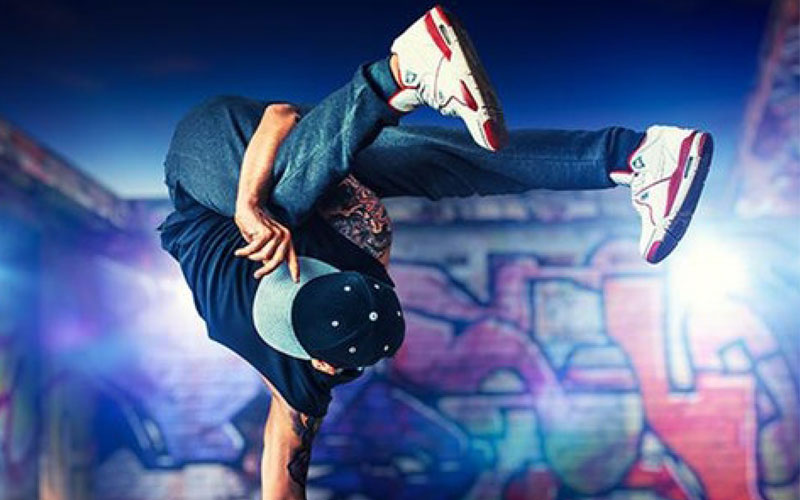
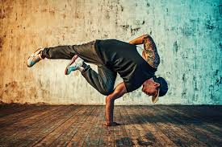
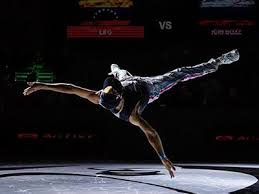
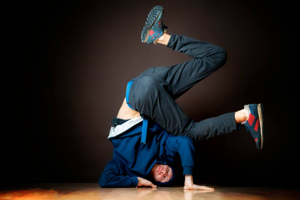
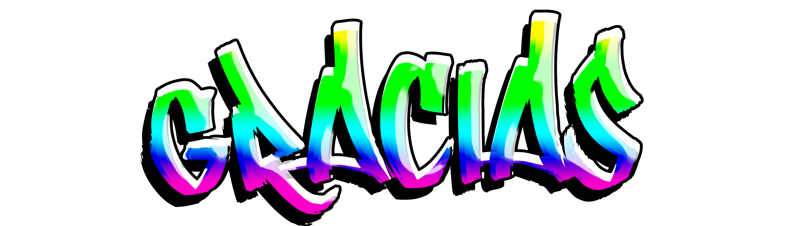

1. INTRODUCCION
El breaking, también conocido popularmente como breakdance, es una disciplina artística de origen urbano que mezcla elementos de danza, acrobacia, ritmo y expresión individual.
Conoce la historia del breakdance

Esta disciplina se basa en una serie de movimientos que el bailarín adapta y organiza según la música que escucha, dando lugar a una composición visual que refleja tanto habilidad física como creatividad. Dentro del breaking existen cuatro bloques principales que definen su estructura.
ESTRUCTURA DEL BREAKDANCE |
CARACTERISTICAS | EJEMPLO |
| Toprock | Son los movimientos de pies que se realizan de pie. Es la primera parte de la exhibición y sirve como calentamiento para las transiciones a los movimientos más acrobáticos del downrock.
|
|
| Downrock | Es el trabajo de pies que se realiza en el suelo, a diferencia del toprock que se realiza de pie. Implica movimientos rápidos y complejos con los pies, como pasos, giros y transiciones, demostrando la destreza del bailarín en el control y velocidad de sus movimientos.
|
 |
| Power Moves | Son movimientos de baile que se definen, en términos generales, como movimientos que se basan en la velocidad, el impulso y elementos acrobáticos para su ejecución, los movimientos de potencia se asemejan más a la gimnasia que al baile.
|
 |
Freezes |
Son poses o movimientos de equilibrio que se mantienen inmóviles durante un corto período, enfatizando un sonido o ritmo de la música. Son una forma de detener el movimiento y crear una pausa visual y sonora.
|
 |
2. Consejos para aprender:
La práctica constante es clave para dominar los movimientos y desarrollar el ritmo.
Realiza ejercicios de estiramiento y fortalecimiento para prepararte para los movimientos de breakdance.
El ritmo de la música es fundamental para el breakdance, así que presta atención a los breaks de batería y a la energía de la canción.
La práctica y la paciencia son clave para aprender breakdance. No te rindas si no lo consigues a la primera.
3. Tutoriales
Ahora que ya conoces las bases del breakdance podemos empezar a practicarlo! por favor haz clic en el enlace de abajo para continuar con las clases

Agradecemos que haya decidido visistar nuestro sitio web, nos gustaria que contestara un pequeño formulario acerca de su experiencia con las clases para mejorar varios aspectos de nuestra academia online en base a sus criterios
Cualquier duda o pregunta que tengas puede enviarla por aqui